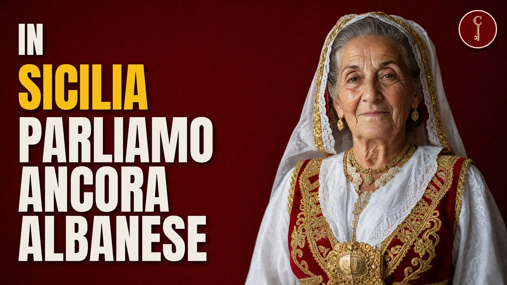

Sicilia
26 cognomi Siciliani che rivelano le tue origini Albanesi

Guarda il video su YouTubeSe il tuo cognome ha un accento dove non te lo aspetti, o in Sicilia suona un po' strano, la tua famiglia potrebbe venire dall'altra parte del mare: dall'Albania. Nel Quattrocento, dopo la morte di Scanderbeg, famiglie intere di albanesi attraversarono il mare e chiesero terra ai signori di Sicilia. Fondarono Piana degli Albanesi, Palazzo Adriano, Mezzojuso, Contessa Entellina, Santa Cristina Gela, Biancavilla. In alcuni di questi paesi si parla ancora albanese.
Le fonti
Le fonti su cui si basa il video.
archive.org
Apri l'articoloarchive.org
Apri l'articoloarchive.org · 1941
R. Petrotta, Arbëresht në Siqeli / Gli Albanesi in Siciliacatalog.archives.gov
NARA, Italians to America Passenger Data File 1855-1900 (NAID 1746097), pubblico dominiocensus.gov
Frequently Occurring Surnames 2010 e 2020 (cognomi con >= 100 portatori), pubblico dominiodemo.istat.it
Popolazione residente per età, sesso e stato civile al 1° gennaio 2025 (demo.istat.it), CC BY 4.0migrantes.it
Rapporto Italiani nel Mondo 2025, allegati socio-statistici, elaborazione su dati AIRE e Istatquery.wikidata.org
Wikidata (CC0), interrogazione SPARQL del 14/10/2026 su P734 (cognome) e P19 (luogo di nascita)Wikipedia
Albanese (cognome) (it.wikipedia)Wikipedia
Anthony Albanese (en.wikipedia)Wikipedia
Arbëreshë (it.wikipedia)Wikipedia
Arbëreshë people (en.wikipedia)Wikipedia
Arianiti family (en.wikipedia)Wikipedia
Biancavilla (en.wikipedia)Wikipedia
Biancavilla (it.wikipedia)Wikipedia
Borgo Schirò (it.wikipedia)Wikipedia
Bronte (it.wikipedia)Wikipedia
Bua family (en.wikipedia)Wikipedia
Castriota (famiglia) (it.wikipedia)Wikipedia
Charles Matranga (en.wikipedia)Wikipedia
Contessa Entellina (it.wikipedia)Wikipedia
Dara, Greece (en.wikipedia)Wikipedia
Demetrio Camarda (en.wikipedia)Wikipedia
Demetrio Camarda (it.wikipedia)Wikipedia
Demetrio Reres (en.wikipedia)Wikipedia
Demetrio Reres (it.wikipedia)Wikipedia
elenco villaggiWikipedia
Enrico Cuccia (en.wikipedia)Wikipedia
Enrico Cuccia (it.wikipedia)Wikipedia
etimologiaWikipedia
Fabio Stassi (it.wikipedia)Wikipedia
Francesco Crispi (en.wikipedia)Wikipedia
Francesco Crispi (it.wikipedia)Wikipedia
Giacomo Schirò (it.wikipedia)Wikipedia
Giorgio Guzzetta (it.wikipedia)Wikipedia
Giorgio Stassi (it.wikipedia)Wikipedia
Girolamo Sirchia (it.wikipedia)Wikipedia
Giuseppe Crispi (en.wikipedia)Wikipedia
Giuseppe Crispi (it.wikipedia)Wikipedia
Giuseppe Schirò (en.wikipedia)Wikipedia
Golem of Kruja (en.wikipedia)Wikipedia
Kastrioti family (en.wikipedia)Wikipedia
Luca Matranga (en.wikipedia)Wikipedia
Luca Matranga (it.wikipedia)Wikipedia
Mataranga family (en.wikipedia)Wikipedia
Mezzojuso (en.wikipedia)Wikipedia
Mezzojuso (it.wikipedia)Wikipedia
Moisi Golemi (en.wikipedia)Wikipedia
Muzaka family (en.wikipedia)Wikipedia
Myzeqe (en.wikipedia)Wikipedia
Nicola Barbato (en.wikipedia)Wikipedia
Nicola Barbato (it.wikipedia)Wikipedia
Nicolò Chetta (it.wikipedia)Wikipedia
Nicolò Figlia (it.wikipedia)Wikipedia
pagina cognome)Wikipedia
pagina cognome)Wikipedia
Palazzo Adriano (en.wikipedia)Wikipedia
Palazzo Adriano (it.wikipedia)Wikipedia
Paolo Maria Parrino (it.wikipedia)Wikipedia
Paolo Schirò (it.wikipedia)Wikipedia
Piana degli Albanesi (it.wikipedia)Wikipedia
Pietro Matranga (it.wikipedia)Wikipedia
Rrjolli (en.wikipedia)Wikipedia
Sant'Angelo Muxaro (it.wikipedia)Wikipedia
Santa Cristina Gela (en.wikipedia)Wikipedia
Santa Cristina Gela (it.wikipedia)Wikipedia
Simone Cuccia (it.wikipedia)Wikipedia
voce sul cognome)wiktionary.org
crispus (en.wiktionary)Materiali
Attribuzioni di immagini e video
Sëndahstinë dygluhësh
Gspata · CC BY-SA 4.0

Gspata · CC BY-SA 4.0
Monte della Fiera - panoramio
trolvag · CC BY-SA 3.0

trolvag · CC BY-SA 3.0
Pamje e Horës së Arbëreshëvet
Demetrio46 · CC BY 3.0

Demetrio46 · CC BY 3.0
Bashkia e horës së Kuntisës
Gspata · CC BY-SA 4.0

Gspata · CC BY-SA 4.0
Piana degli Albanesi - cattedrale di San Demetrio Megalomartire - 2026-09-26 inside
GiovanniPen · CC BY-SA 4.0

GiovanniPen · CC BY-SA 4.0
Etna Biancavilla
Davide Restivo from Lenzburg, Aarau, Switzerland · CC BY-SA 2.0

Davide Restivo from Lenzburg, Aarau, Switzerland · CC BY-SA 2.0
Monreale Cathedral exterior BW 2012-10-09 10-23-10
Berthold Werner · CC BY-SA 3.0

Berthold Werner · CC BY-SA 3.0
Sëndahstina
M. Iannizzotto · CC BY 3.0

M. Iannizzotto · CC BY 3.0
Palazzo Corvino
Stendhal55 · CC BY-SA 4.0

Stendhal55 · CC BY-SA 4.0
Fontana di piazza Umberto I
Svtflp · CC BY-SA 3.0

Svtflp · CC BY-SA 3.0
Comune di Contessa Entellina PA skyline
Swoolverton · CC BY-SA 4.0

Swoolverton · CC BY-SA 4.0
SAN MICHELE DI GANZARIA
Michele.iannizzotto · CC BY-SA 4.0

Michele.iannizzotto · CC BY-SA 4.0
Vlorë (20508)
Orest222 · CC BY-SA 4.0
.jpg){kind=link}
Orest222 · CC BY-SA 4.0
Albanians of Sicily flag
Gspata · CC BY-SA 4.0

Gspata · CC BY-SA 4.0
Pasqua a Piana degli Albanesi
Eparchia di Piana degli Albanesi · CC BY-SA 4.0

Eparchia di Piana degli Albanesi · CC BY-SA 4.0
Museo Civico Nicola Barbato - Piana degli Albanesi 07
Daniele Pugliesi · CC BY-SA 3.0

Daniele Pugliesi · CC BY-SA 3.0
Lago di Piana degli Albanesi
Pequod76 · CC BY-SA 3.0

Pequod76 · CC BY-SA 3.0
Kastro Pantokratora, Preveza - 1
Annatsach · CC BY-SA 4.0

Annatsach · CC BY-SA 4.0
Contessa Entellina Italo-Albanian priest and deacon
Gspata · CC BY-SA 4.0

Gspata · CC BY-SA 4.0
Museo Civico Nicola Barbato - Piana degli Albanesi 09
Daniele Pugliesi · CC BY-SA 3.0

Daniele Pugliesi · CC BY-SA 3.0
Piana degli Albanesi - cattedrale di San Demetrio Megalomartire - 2026-09-26 plaque4
GiovanniPen · CC BY-SA 4.0

GiovanniPen · CC BY-SA 4.0
Ignoto, veduta del porto di livorno, xvii secolo 01
vedi pagina del file · CC BY 3.0

vedi pagina del file · CC BY 3.0
Lago Piana degli Albanesi
Costacostacostacosta · CC BY-SA 4.0

Costacostacostacosta · CC BY-SA 4.0
Overview of Piana degli Albanesi
Gspata · CC BY-SA 4.0

Gspata · CC BY-SA 4.0
Hora e Arbëreshëvet. Panoramo
Susomoinhos · CC BY-SA 4.0

Susomoinhos · CC BY-SA 4.0
Chiesa di Sant'Antonio il Grande
Davide Mauro · CC BY-SA 4.0

Davide Mauro · CC BY-SA 4.0
View of Mount Etna from Reggio Calabria - Italy - 10 Feb. 2017 - (1)
Jacopo Werther · CC BY-SA 4.0
.jpg){kind=link}
Jacopo Werther · CC BY-SA 4.0
Scorcio di Bronte 02
Davide Mauro · CC BY-SA 4.0

Davide Mauro · CC BY-SA 4.0
Maniace abbey portal
epanto · CC BY-SA 2.0

epanto · CC BY-SA 2.0
Vlorë (11652)
Orest222 · CC BY-SA 4.0
.jpg){kind=link}
Orest222 · CC BY-SA 4.0
Piana degli Albanesi - chiesa di Maria Santissima Odigitria - 2026-09-27 altare
GiovanniPen · CC BY-SA 4.0

GiovanniPen · CC BY-SA 4.0
Piana degli Albanesi - cattedrale di San Demetrio Megalomartire - 2026-09-26 plaque2
GiovanniPen · CC BY-SA 4.0

GiovanniPen · CC BY-SA 4.0
Piana degli Albanesi - chiesa di Maria Santissima Odigitria - 2026-09-26 front
GiovanniPen · CC BY-SA 4.0

GiovanniPen · CC BY-SA 4.0
Piana degli Albanesi - chiesa di Maria Santissima Odigitria - 2026-09-27 P5775
GiovanniPen · CC BY-SA 4.0

GiovanniPen · CC BY-SA 4.0
Piana degli Albanesi - cattedrale di San Demetrio Megalomartire - 2026-09-26 DX
GiovanniPen · CC BY-SA 4.0

GiovanniPen · CC BY-SA 4.0
Piana degli Albanesi - chiesa di Maria Santissima Odigitria - 2026-09-27 10-56-54 001
Auregann · CC BY-SA 4.0

Auregann · CC BY-SA 4.0
Lake of Piana degli Albanesi at sunset 3
Auregann · CC BY-SA 4.0

Auregann · CC BY-SA 4.0
Dhërmi and surroundings from Llogara
Albinfo · CC BY-SA 4.0

Albinfo · CC BY-SA 4.0
Etna Krater Suedblick
Clemensfranz · CC BY-SA 3.0

Clemensfranz · CC BY-SA 3.0
Ribera, statua di Francesco Crispi
Antonio Pignato · CC BY-SA 4.0

Antonio Pignato · CC BY-SA 4.0
Piazza Umberto I Palazzo Adriano
Epifania Lo Presti · CC BY-SA 3.0

Epifania Lo Presti · CC BY-SA 3.0
Piana degli Albanesi - cattedrale di San Demetrio Megalomartire - 2026-09-26 guzzetta
Fabrizio Cacciatore · CC BY-SA 3.0

Fabrizio Cacciatore · CC BY-SA 3.0
1506 wurde Sant` Angelo Muxaro gegründet. 01
Holger Uwe Schmitt · CC BY-SA 4.0

Holger Uwe Schmitt · CC BY-SA 4.0
1506 wurde Sant` Angelo Muxaro gegründet. 07
Holger Uwe Schmitt · CC BY-SA 4.0

Holger Uwe Schmitt · CC BY-SA 4.0
1506 wurde Sant` Angelo Muxaro gegründet. 02
Holger Uwe Schmitt · CC BY-SA 4.0

Holger Uwe Schmitt · CC BY-SA 4.0
1506 wurde Sant` Angelo Muxaro gegründet. 03
Holger Uwe Schmitt · CC BY-SA 4.0

Holger Uwe Schmitt · CC BY-SA 4.0
Contessa Entellina Spiazzo Greco (Albanese)
Gspata · CC BY-SA 4.0
.jpg){kind=link}
Gspata · CC BY-SA 4.0
Campagna attorno Contessa Entellina 01
Davide Mauro · CC BY-SA 4.0

Davide Mauro · CC BY-SA 4.0
Scene ricostruite
Alcune scene sono ricostruite con l'intelligenza artificiale. Non sono documenti né fotografie d'epoca.
Mappe
- Confini amministrativi italiani (openpolis/geojson-italy, dati ISTAT) · CC BY 4.0 · fonte